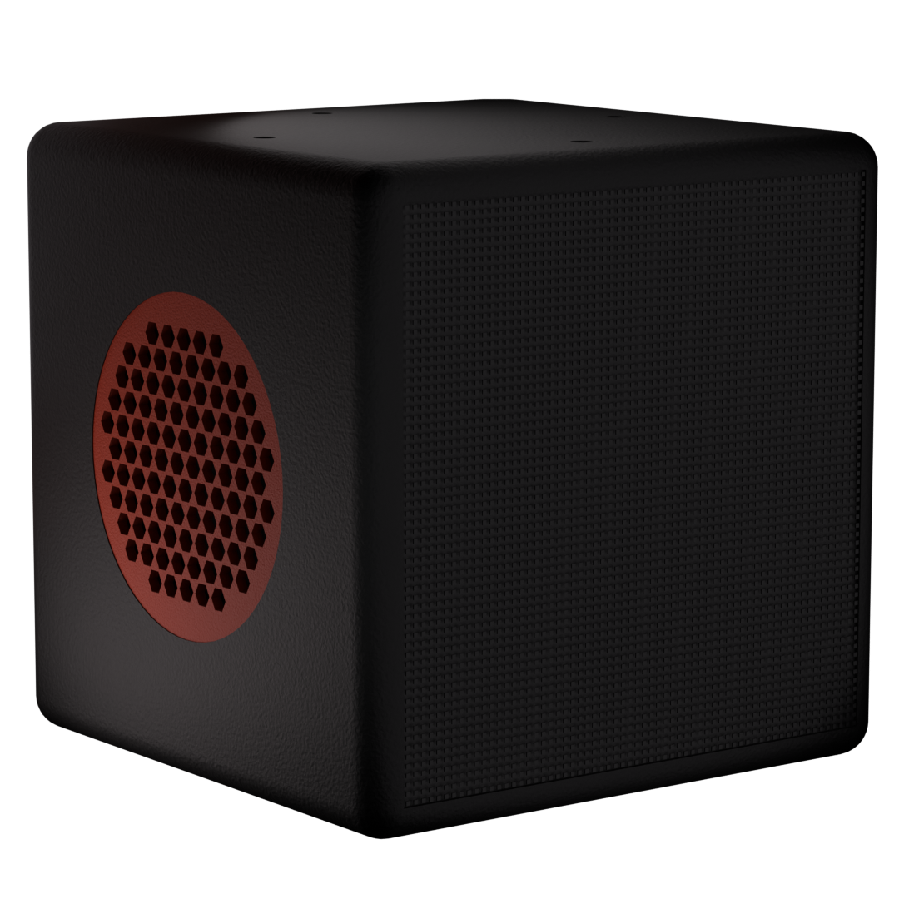

Cube
The Raspberry Pi inside the Cube handles the always-on parts of the system: wake-word detection, microphone input, speech recognition and the LED matrix.
[001]Project / The Cube
Voice-controlled physical computing system
A compact hardware and software system combining voice interaction, a 64×64 LED matrix, integrated audio and a custom-designed enclosure around a Raspberry Pi 5.

[002]
Introduction
Cube is a 128 mm desktop device I am building around a Raspberry Pi 5, a 64×64 RGB matrix, local voice processing and a custom enclosure.
The idea is to use it as a physical voice interface for my computer and home server. It can listen for a wake word, transcribe speech locally, and pass requests to the local AI running on my PC.
From there, the AI can interact with my computer through the terminal, for example executing commands, searching for files or prints, and controlling local tools.
Requests that do not need my PC can be handled through my home server instead. The Cube can trigger existing automations to download movies or music, manage services, or send files back to me.
Before designing the enclosure, I started by testing the individual parts: the HUB75E matrix and animations, wake-word detection, Whisper for speech recognition, and local language models.
The current stage is focused on the internal body: fitting the electronics inside the 128 mm cube, designing mounts, routing cables, managing cooling and testing printed prototypes before moving on to the final enclosure.
[003]
Architecture

The Raspberry Pi inside the Cube handles the always-on parts of the system: wake-word detection, microphone input, speech recognition and the LED matrix.
When I ask for something related to my computer, the request is sent to the local AI running on my PC. The model can then decide what needs to happen and interact with the system through the terminal.
Other requests can be passed to my home server, where I already run different services and automations. This lets the Cube trigger tasks such as downloading media, finding files or starting existing workflows without needing to run everything directly on the Raspberry Pi.
The LED matrix acts as the main visual feedback for the system, showing when the Cube is idle, listening or speaking.